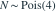
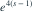
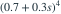
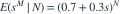
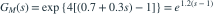

。给定 后，每次事件以概率 0.3 独立地产生赔款，赔款事件总数为
后，每次事件以概率 0.3 独立地产生赔款，赔款事件总数为  。则 的概率母函数 为哪项？
。则 的概率母函数 为哪项？- A

- B

- C
- D
我已思考，展开答案与解析
正确答案：D
- 条件于 N，有

。 - 利用泊松母函数，

。
易错提醒先取条件母函数再取期望；不能把随机次数替换为其均值。
原模拟卷 A · 模拟卷 A 第 23 题
原创

。给定 后，每次事件以概率 0.3 独立地产生赔款，赔款事件总数为 。则 的概率母函数 为哪项？


。
。原模拟卷 A · 模拟卷 A 第 23 题
原创